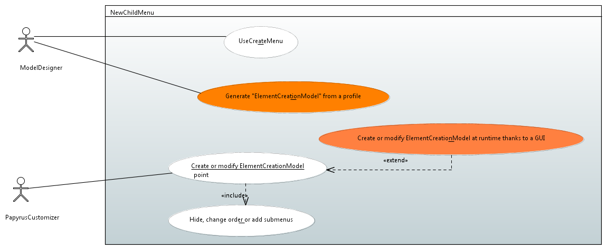
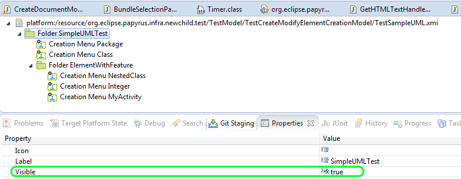
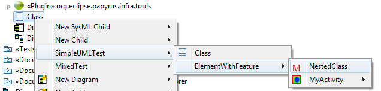
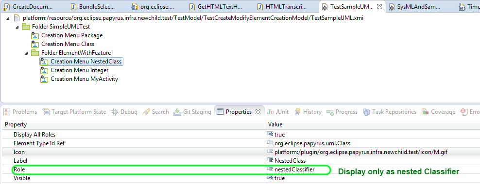

- AddNewChild (id=newChild001):
Papyrus shall add in the menu new child for new customized elements by using extended type
- HideElement (id=newChild002):
Papyrus shall not display all UML or SysML element creation
- newChildFromProfile (id=newChild003):
Papyrus shall add the creation of new element from a subset of profile
- newChildMenuDisplay (id=newChild004):
Papyrus shall be able to associated icons to folder or creation menu
- RoleAndElementCreation (id=newChild005):
When an element can created from several roles for a container, Papyrus shall let the possibility to choose the role or to let to the possibility to be created from all role.

The Papyrus User shall use this functionality from the model explorer in order to create elements in the model. It can decide to display or not this element creation
A user can create an element by select element in the model explorer, click on it ant then click on the diagram.
In order to not display a menu, a user can edit the model that represent the creation menu and set the attribute visibility to false.

An advanced User is able to create of modify creation menu. This menu is a model that can be edited
An advanced user can contribuate to the menu by adding a new plugin that contains:
<extension
point="org.eclipse.papyrus.infra.newchild">
<menuCreationModel
model="YourCreationMenu.xmi">
</menuCreationModel>
</extension>
In the following example, a menu creation for a package is presented. This menu is contained in the folder SimpleUMLTest. We have associated a image for this menu.
In this following example, a creation menu will be specify to allow creation of nested classifier. That 's why the role "nestedClassifier" is precised. The label for this creation is "nestedClass"


In the following example a creation menu is created for activities. In this case, all roles are displayed. Thanks to this, when we want to associate an activity to a state, 3 roles are proposed.


From a stereotyped profile, a model of new child menu can be generated. For example a user after designing a profile, want to have a dedicated menu from this profile/ For the moment this function is not implemented.
The User can modify the creation menu by adding submenus: order about new child menu, precise if the role must be displayed.
It only needed to change the order of element in the corresponding creation menu model
A user can edit a the model that represent the creation menu at runtime for papyrus thanks to a dedicated UI. For the moment this function is not implemented.